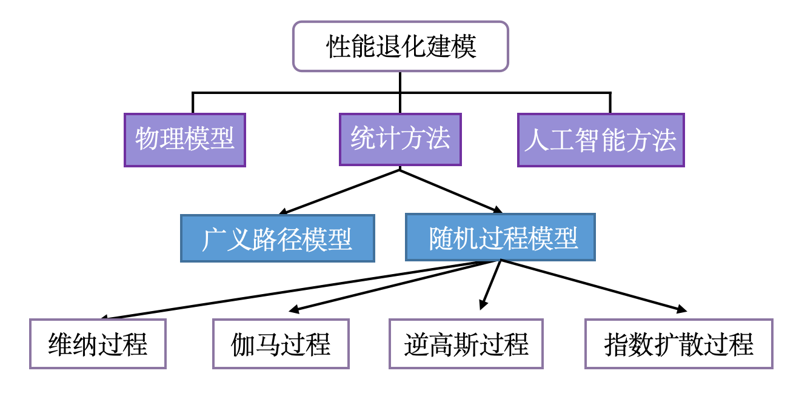

1 引言
可靠性作为评估产品质量的核心指标, 能够全面反映产品的性能、稳定性和 耐用程度, 是衡量一个国家制造业发展水平的重要标准. 为了加快推进质量强国建设, 提升我国制造业的国际竞争力, 中共中央、国务院于 2023 年 2 月联合发布了《质量强国建设纲要》. 该纲要明确提出要实施质量可靠性提升计划, 重点提高大型装备、基础零部件以及元器件的可靠性水平. 这一计划的实施, 将有助于推动我国制造业的转型升级, 提升产品质量和可靠性, 增强企业的核心竞争力. 可靠性评估作为产品质量提升的关键环节, 对于确保产品在全寿命周期内的稳定性和可靠性具有至关重要的作用. 通过科学合理的可靠性评估方法, 可以及时发 现产品在设计、生产、使用过程中存在的问题, 为改进和优化提供依据. 同时, 可靠性评估还可为企业制定产品标准和质量控制提供重要参考, 促进产业整体水 平的提升. 因此, 实施质量可靠性提升计划, 加强可靠性评估工作, 对于推动我国制造业高质量发展、提升国家整体竞争力具有重要意义.
传统的产品可靠性评估方法主要依赖于失效数据, 即在产品出现故障或失效时收集的数据. 这种方法通常基于一定的寿命分布假设, 如指数分布、威布尔分 布或对数正态分布等, 来推断产品的可靠度 (张志华, 2002; 茆诗松 等, 2008). 然而, 随着 生产技术的进步和产品质量标准的提高, 产品的可靠度不断提升, 导致在一定的 试验时间内很难收集到失效数据来支持这种传统的可靠度评估. 虽然很多国内外 学者提出了处理零失效数据的统计方法, 如 Miller 等 (1992) 建立”黑盒子模型”获取 失效概率的先验分布, 减少了主观因素对可靠性评估结果的影响; 韩明 (2003) 提出一 种可靠性指标估计的综合贝叶斯法, 通过引入经验信息来估计产品失效概率, 避 免了可靠性评估中出现的异常现象; 李海洋 等 (2018) 在置信限分析中结合失效信息来 修正单侧置信限, 得到产品可靠性单侧置信限的稳健估计, 但是这些方法都依赖 大量的先验信息, 并不能从根本上解决失效信息缺乏所带来的可靠性评估问题. 为此, 国内外学者开始关注基于产品性能退化数据的可靠度评估方法. 与失效数 据不同, 性能退化数据是在产品正常使用过程中监测到的性能参数变化值. 这些 数据反映了产品性能随时间的退化趋势, 从而提供有关产品可靠性的有用信息. 基于性能退化数据的可靠度评估方法主要通过对产品性能参数的连续监测和数 据分析来实现. 通过收集产品在不同时间点的性能退化数据, 建立性能退化模型 来描述产品性能随时间的变化规律, 推导出产品的可靠度函数, 从而对产品的可靠性进行评估(Meeker 等, 1998; Peng 等, 2009; Ye, Xie, 2015). 与基于失效数据的传统方法相比, 基于性能退化数据的可靠度评估方法具有以下三个优势: 首先, 通过连续监测产品的性能参数变化, 能够在产品尚未发生实际失效时提供更准确、 更及时的可靠性评估. 这不仅缩短了评估周期, 还提高了评估效率和精度. 其次, 它可以在产品运行的早期阶段发现潜在问题, 及时采取必要的维护措施, 防止突 发失效的发生, 延长产品的使用寿命, 降低维护成本. 同时, 这也为企业提供了 更科学的维护策略制定依据, 有助于优化维修计划和库存管理. 最后,通过对性能退化数据的分析,可以深入了解产品的性能变化趋势和失效机理. 这为产品的 设计和改进提供了宝贵的反馈信息, 有助于发现设计中的薄弱环节和潜在问题, 指导产品的优化设计和持续改进. 因此, 研究基于性能退化数据的可靠度评估方法对于提高产品可靠性、指导维护和预防失效、以及促进产品设计和改进都具有重要意义.
1.1 退化建模方法回顾
基于系统性能特征退化数据的建模方法主要可分为三类: 物理模型、人工智能方法和数据驱动的统计方法. 基于物理模型的方法以理解产品的物理结构、工作原理和环境条件为基础, 从而揭示潜在的物理故障过程. 虽然物理模型能够准确描述系统失效规律和性能指标之间的相互关系, 但由于现代工业设备的复杂性, 获得失效 物理模型的解析形式通常具有挑战性, 因而在实际应用中受到一定限制. 近年来, 人 工智能方法在性能退化建模方面取得了显著进展(Chao 等, 2022; Nguyen 等, 2022; Xia 等, 2022), 它通过对数据进行模型训练, 建立与可靠性相关的映射关系, 并考虑各个性能指标之间的相依性. 然而, 在实际退化数据分析中, 该方法面临以下挑战: 1. 要求大量高质量的训练数据和准确的事件标记, 同时需要大量时间训练模型. 2. 主观假设故障发生时间 已知, 但错误的时间标记可能引入噪声, 影响可靠性估计的准确性. 3. 模型泛化能力的有限, 特别是在面对新领域或未见场景时的预测准确性(Ren 等, 2024). 数据驱动的统计方法通过分析系统的历史故障信息或性能退化数据建立统计模型, 用于评估系统的可靠性, 并为确保系统稳定性、制定质保策略和预防性维修策略提供理论依据(Wen 等, 2022). 在基于故障事件数据的建模中, 通过收集系统故障的时间, 运用统计方法来推断故障时间的概率分布, 并将其用于后续的决策分析(Lewis-Beck 等, 2022; Peng Y 等, 2017). 尽管这种方法能够描述整体故障时间的分布趋势, 但它无法为特定系统提供准确的故障预测和可靠性评估. 在基于性能退化数据的建模中, 通过监控系统性能退化状态, 建立退化模型并学习系统性能退化的演化规律, 从而评估系统的可靠性(Zhang 等, 2021). 该方法具有两个显著的优点: 1.性能退化数据的易收集性: 随着传感器和监测技术的不断进步, 我们能够实时监控和收集性能退化数据. 这种随时获取退化特征的能力极大地简化了数据收集的过程, 并提高了数据的准确性. 2.性能退化与系统寿命的直接关联: 性能退化所反映的是系统在使用过程中状态的变化. 这种变化与系统的寿命息息相关, 因此, 通过分析性能退化信息, 我们能够实时更新系统寿命的估计, 实现对系统可靠性的实时预测. 这为及时采取维修策略和管理系统可靠性提供了有力支持. 下面章节将对性能退化建模方法的研究现状进行分析, 对应的综述框架见图 1.1.
1.2 一般路径模型
早期的退化数据建模主要借鉴了随机效应模型的思想: 通过物理或经验分析, 确定产品性能退化与时间的函数形式, 并在此基础上引入随机效应和观测误差, 从而建立产品寿命与性能退化之间的定量关系. Ye, Xie (2015) 将这种方法称为一般路径模型(General path model). Lu 等 (1993) 首次对一般路径模型进行了详细的阐述, 并说明了该模型可以灵活地刻画测量误差和产品间的异质性. 之后, 该模型得到了广泛关注, 并被应用到更复杂的退化数据建模中(Robinson 等, 2000). 例如: Hong 等 (2015) 引入动态协变量来刻画多种应力(如：温度, 湿度和紫外线强度)对某种环氧树脂涂层退化的影响. Liu 等 (2018) 将该模型拓展到时空退化数据中, 构建了一个由退化过程和传播过程相结合的时空模型. Si 等 (2018) 提出了一种多变量一般路径模型, 用于描述材料拉伸过程中的动态局部变形, 并通过两阶段方法验证其有效性和适用性. 在此基础上, Lu 等 (2020) 结合非线性路径协变量与特征间随机效应 对模型做了拓展, 并利用EM算法与MCMC模拟实现参数估计和系统可靠性分析. 一般路径模型能够灵活地融合协变量和单元间异质效应, 使其适用于多样化的实际场景, 但是它在计算上存在一定的复杂性, 尤其是在处理大规模多维退化数据时, 可能需要较高的计算资源. 此外, 在实际应用中, 产品的性能退化会受到环境变化、外部因素或未知因素的影响. 当这些因素不能被准确记录或量化时, 一般路径模型就难以刻画这种随机性引起的产品性能退化特征(Ye, Xie, 2015; Zhai 等, 2023).
1.3 随机过程模型
产品性能特征的退化通常由多次微小损伤逐步累积所导致, 这一过程既具有累积性又带有随机性. 退化过程不仅受到外部环境的影响, 还与材料本身的性质及其工作状态密切相关. 因此, 随机过程作为一种能够有效描述这种随机性和累积性的数学工具, 在物理意义上与产品退化特征高度契合, 并逐渐成为研究退化行为的核心方法之一.
近年来, 随着统计学和随机过程理论的不断发展, 维纳过程、伽马过程、逆高斯过程以及指数分散过程（Exponential dispersion process）等模型因其独特的数学性质和对实际问题的适用性而受到广泛关注. 这些模型能够有效地捕捉和描述产品在长期使用过程中的退化行为, 尤其是在描述不同类型的随机损伤积累机制上展现出了重要优势. 国内外学者通过大量研究, 已经在这些随机过程模型的拓展与应用、参数估计以及剩余使用寿命预测等方面取得了丰富的成果. 本节将对这些常用的随机过程模型进行文献综述, 具体的模型理论和相关应用将在后续章节中进一步展开。
1.3.1 维纳过程模型
维纳过程及其扩展形式最早用于描述产品性能的退化机制. 由于维纳过程在物理解释和数学性质上的优越性, 过去20年来, 它在退化数据分析方面得到了广泛而深入的研究. 基本的维纳过程假设所有样本的退化均值和波动性是同质的, 且退化路径为线性. Doksum 等 (1992) 使用该模型拟合绝缘电缆寿命数据, 并证明其寿命分布为逆高斯分布. 更多该模型的应用见Guan 等 (2016). 然而, 许多产品的退化路径表现出非线性的特征. 为此, 部分学者提出了基于时间尺度变换的非线性维纳退化模型. 例如, Whitmore 等 (1997) 对维纳过程在时间尺度上进行幂变换, 并利用该模型分析了自控温加热电缆的寿命. Tseng 等 (2007) 也进行了类似研究, 但他们采用了指数变换对维纳过程进行时间尺度上的调整.
产品在实际使用过程中, 其性能退化往往受到多种潜在因素的共同影响, 导致退化路径呈现出显著的异质性. 为了在退化建模中刻画这种异质性, 通常会在模型中引入随机效应, 即假设某些模型参数服从特定的概率分布. Peng 等 (2009) 研究了带随机效应的维纳过程模型，并系统分析了模型假设错误对参数估计的影响; Wang (2010) 在非线性维纳过程模型中引入随机的漂移和波动参数, 提出的模型能够较好地拟合桥梁裂纹数据. Ye, Chen, 等 (2015) 在激光设备性能退化数据中发现模型的漂移参数与波动参数之间存在较强的相依关系, 并提出了一种参数相依的维纳过程退化模型. Zhai 等 (2018) 从加速失效机理的角度进一步拓展了 Ye, Chen, 等 (2015) 的模型. 随后, Zhou 等 (2021) 提出了更为一般的非线性参数相依维纳退化模型, 并给出了其寿命分布的近似表达式. 此外, Paroissin (2015) 观察到某些产品的初始退化值具有随机性, 因此提出了具有随机初始值的维纳退化模型. Shen 等 (2018) 在更一般的随机退化框架下进一步研究了该现象. 更多关于随机效应维纳退化模型的研究, 可参考 (Pan 等, 2017; Tang, Guo, 等, 2014; Wang 等, 2020; Zhang 等, 2018).
由于设备测量精度的限制以及试验设备的老化, 退化测量过程中不可避免地会产生测量误差. 针对这一现象, Whitmore (1995) 建议在基本维纳过程模型中引入时间独立的测量误差, 以更准确地描述退化数据. Peng 等 (2012) 在此基础上进一步研究了该模型, 并推导出了其方差协方差矩阵的解析表达形式. Ye 等 (2013) 对 Whitmore (1995) 的模型进行了扩展, 提出了一种同时考虑测量误差与随机效应的非线性维纳退化模型. 随后, Peng 等 (2020) 在 Ye 等 (2013) 模型的基础上进一步引入了多层随机效应, 并提出了一种基于学生化t随机过程模型, 可有效拟合具有厚尾特征的退化数据. 更多关于带测量误差的维纳退化模型研究及其应用, 可参考 (Li 等, 2017, 2018; Tang, Yu, 等, 2014; Yan 等, 2020).
1.3.2 伽马过程模型
伽马过程在退化建模中常用于拟合具有单调退化路径的产品, 其因能描述逐步累积的退化特性而备受关注. Abdel Hameed (1975) 最早提出使用伽马过程进行退化建模. 随后, Singpurwalla (1997) 从方法论角度对伽马过程进行了深入阐述, 并指出其能够很好地拟合某种机翼合金材料的退化行为. Park 等 (2014) 基于齐次伽马过程推导了产品寿命分布的解析表达, 并指出该分布可进一步用Birnbaum-Sauders(BS)分布近似. 为考虑产品间的异质性, Lawless 等 (2004) 提出了带随机效应的线性伽马退化模型. Tsai 等 (2012) 基于随机效应非线性伽马退化模型, 研究了退化试验的优化设计问题. Guida 等 (2019) 从贝叶斯角度研究了非线性伽马退化过程的参数估计问题, 并提出了一种估计剩余寿命的近似方法. 进一步地, Fan 等 (2017) 利用贝叶斯方法解决了步进应力加速退化试验下的伽马退化模型统计推断问题. 更多相关研究可参考 (Hao 等, 2015; Wang 等, 2021).
在测量误差方面, Pulcini (2016) 假设测量误差服从一阶随机游动过程, 并提出了一种具有时间相关测量误差的伽马退化模型. Giorgio 等 (2019) 在非高斯测量误差的假设下进一步扩展了伽马退化模型. 然而, 在伽马过程中添加时间独立的测量误差通常导似然函数难以解析表示, 从而增加了模型参数估计的难度. 为此, Hazra 等 (2020) 利用近似贝叶斯计算方法, 解决了带时间独立测量误差的伽马退化模型的统计推断问题. 除了在退化建模中的广泛应用外, 伽马过程还在其他领域发挥了重要作用, 如统计过程控制(Chen 等, 2018)和预防性维修(Van Noortwijk, 2009; Yuan 等, 2021)等.
1.3.3 逆高斯过程模型
逆高斯过程是另一种常用来拟合单调退化路径的随机过程. Wang 等 (2010) 最早将逆高斯过程引入退化建模领域, 并发现对于某些具有单调退化路径的高可靠性产品, 基于逆高斯过程的退化模型在拟合效果上优于伽马过程模型. Ye, Chen N (2014) 进一步证明了逆高斯过程是复合泊松过程的极限形式, 从而为逆高斯退化模型提供了清晰的物理解释. 他们还基于维纳过程构建了两种具有解析结构的随机效应逆高斯退化模型. Peng 等 (2014) 从贝叶斯的角度对@ye2014inverse提出的逆高斯退化模型进行了深入分析. 此外, Peng (2015) 研究了同时包含协变量和随机效应的逆高斯退化模型, 并推导了对应的寿命分布及平均失效时间的解析表达形式. 更多关于该模型的研究可参考 (Guo 等, 2018; Ma 等, 2019; Peng W 等, 2017; Ye, Chen L-P, 等, 2014).
在测量误差的研究方面, Sun 等 (2021) 在时间相关测量误差的假设下, 研究了带测量误差与随机效应的逆高斯退化模型. Hao 等 (2019) 则在不同的随机效应设置下进一步探讨了带测量误差的逆高斯退化建模方法. 此外, Peng 等 (2019) 提出了一种改进的逆高斯过程退化模型, 该模型假设观测量在特定的非线性变换下服从逆高斯过程, 从而增强了对复杂退化行为的刻画能力. 当系统具有多个性能退化指标时, Fang 等 (2022) 观察产品多个性能指标存在固有异质性和相依性, 并提出了一种具有多元随机效应的逆高斯退化模型, 以更全面地描述系统性能的退化行为.
1.3.4 指数分散过程模型
指数分散过程是一类广义的随机过程, 前述的维纳过程、伽马过程和逆高斯过程均为其特例 (Tseng 等, 2016). 当指数分散过程的单位方差函数呈幂函数形式时，被称为 Tweedie 指数分散过程, 其中参数\(p\)的不同取值对应特定的随机过程: \(p=0,2,3\)时, 分别对应维纳过程, 伽马过程和逆高斯过程. 目前, 指数分散过程在退化建模中的研究尚不够深入. Tseng 等 (2016) 基于指数分散过程研究了加速退化试验中的样本分配问题, 并针对三种常用的优化准则(V-最优, D-最优, 和A-最优), 给出了最优样本分配方案. Lee 等 (2020) 进一步探讨了基于指数分散过程的加速退化试验设计, 在两个和三个应力水平下, 通过最小化产品寿命分布分位点估计的渐近方差, 给出了各应力水平下的全局最优样本分配方案. Hong 等 (2017) 将指数分散过程推广应用于加速退化试验设计，统一了基于维纳过程、伽马过程和逆高斯过程的加速退化试验最优设计方法. 随后, Zhou 等 (2019) 系统阐述了非齐次指数分散过程的统计性质, 并探讨了具有随机效应的指数分散过程的统计推断方法. 在考虑产品异质性方面, Duan 等 (2018) 研究了具有随机效应的线性指数 分散过程, 以更好地刻画产品间的变异性. Chen 等 (2021) 则进一步探讨了具有随机效应的非线性指数分散过程, 同时研究了同时包含加速退化和随机效应的指数分散过程的统计推断问题. 此外, Xu 等 (2021) 利用指数分散过程的性质, 提出了适用于随机环境下的系统可靠性评估框架.
1.4 数据集介绍
1.4.1 激光退化数据
该数据集主要用于本书的第 2.2 节、 3.2 节和 5.1 节, 来源于 Meeker 等 (1998). 数据集记录了在 80°C 高温条件下测试的 15 个 GaAs (砷化镓) 激光器的运行电流随时间增加的百分比变化情况. 在时间 \(t=0\) 时, 所有样本的电流增加百分比均设定为 0, 此后每隔 250 小时 测量一次运行电流的增加量, 直至试验终止时间 4000 小时. 所有激光器的性能退化过程如图 1.2 所示. 激光器的性能退化表现为运行电流随时间的逐渐增加, 以维持恒定的光输出. 当电流增加量超过初始值的 10% 时, 激光器被认为失效. 该数据集在分析激光器的退化模式、寿命预测以及识别潜在失效机制等方面具有重要研究价值.
1.4.2 碳膜电阻器退化数据
该数据集主要用于本书的第 2.2 节, 数据来源于 Meeker 等 (1998), 列于其书中表 C.3. 数据集记录了碳膜电阻器在不同温度条件下电阻随时间的变化情况, 包括30个电阻器单元在 \(83^\circ\)C、\(133^\circ\)C 和 \(173^\circ\)C 三个温度水平下的电阻增加百分比. 试验首先记录了每个电阻器的初始电阻值, 随后分别在 452 小时、1030 小时、4341 小时和 8084 小时时, 以初始电阻值的百分比形式记录电阻增加情况. 该数据集可用于评估不同温度条件下碳膜电阻器的性能退化趋势, 帮助研究人员分析温度对电阻器退化速率的影响. 图 1.3 展示了 9 个碳膜电阻器在 \(83^\circ\)C 条件下的电阻增加百分比退化路径.
1.4.3 有机发光二极管退化数据
该数据集主要用于本书的第 2.3 节, 来源于 Bae 等 (2008). 该数据集主要用于评估有机发光二极管 (Organic light-emitting diode, OLED) 在恒定应力水平 (直流电流=25mA) 下的可靠性. 该数据集包含了6个用于移动电话显示元件的OLED样本单元, 在20个时间点的光度测量值. 测试样本被分配在在四种加速应力水平：25 mA, 32 mA, 40 mA和50 mA. 各直流电流下的退化路径如图 1.4 所示. 行业标准规定, 在相对光度低于0.5或低于50%时失效.
1.4.4 列车车轮退化数据
该数据集主要用于本书的第 3.2 节, 来源于 (Peng 等, 2020), 记录了14个列车车轮在行驶过程中直径磨损情况. 测试以50千公里为间隔, 直至累积里程达到1000千公里. 在每个里程节点, 分别测量每个车轮的直径. 当直径磨损达到60毫米时, 即视为车轮失效. 由于其中三个样品的车轮直径磨损过快, 很早便超过了 60 毫米, 故在数据集中移除了这三组数据. 剩余 11 个样品的磨损数据如图 1.5 所示. 该数据集可用于分析列车车轮的退化趋势和剩余使用寿命, 有助于科学规划车轮的维护与更换策略, 从而提升铁路运输的安全性与运营效率.
1.4.5 设备-B数据/集成电路数据
数据集主要用于本书的第 3.3 节、 第 4.1 节、 4.4 节, 来源于 Meeker 等 (1998). 该数据集专注于通信卫星中使用的射频功率放大器在不同温度条件下的性能和可靠性. 工程师们将功率输出下降0.5分贝 (dB) 以下的初始输出时间点定义为故障时间, 并随机选取了67,000个设备-B样本位置, 在\(150^{\circ}\)C、\(195^{\circ}\)C和\(237^{\circ}\)C这三个极端温度条件下, 以每125小时为间隔进行测量, 直至累计达到4,000小时. 图 1.6 展示了在所有温度条件下产品的退化路径.
1.4.6 铝合金裂纹退化数据
该数据集主要运用于本书的第 4.1 节、 5.1 节. 数据可以在(Wu 等, 2003) 的表1中找到. 实验中, 选用了30个抛光处理的2024-T351铝合金样本, 在室温环境下利用统一测量设备进行测试. 实验设计以10,000次载荷循环为时间单位, 测试范围覆盖1至4单位, 步长设定为0.5单位. 当样本裂纹长度超出15毫米时, 即判定为失效并终止测试, 此时的循环次数记录为样本寿命, 其退化路径如图 1.7 所示.
1.4.7 锂离子电池容量退化数据
该数据集主要运用于本书的第 4.4 节, 数据来源于(Severson 等, 2019). 该数据集包含124个商业锂铁磷 (LFP) /石墨电池 (A123 Systems, APR18650M1A, 1.1 Ah名义容量) 在快速充电条件下的循环测试数据. 这些电池样本在一个温度控制的环境室 (30°C) 中进行测试, 在放电条件保持一致的情况下采用72种不同的快速充电策略. 研究中定义电池寿命终止为电池容量降至其名义容量的80%. 退化路径如图 1.8 所示. 分析该数据集有助于评估和预测电池的循环寿命.
1.4.8 应力关系退化数据
该数据集主要运用于本书的第 5.1 节, 原始数据来源于 Yang (2008) 并在 Ye, Chen L-P, 等 (2014) 中表 IV 中列出. 应力松弛是指在恒定应变下随时间发生的组件应力损失. 该数据集展示了电气连接器在不同温度条件下的应力松弛行为, 记录了在65°C、85°C和100°C三个不同温度下, 18个电气连接器样本的应力松弛测试结果. 这些样本被随机分为三组, 每组在指定的温度下进行测试, 以模拟连接器在实际使用过程中可能遇到的不同环境条件. 当应力松弛超过预定义的水平 (例如30%) 时, 认为连接器已经失效. 退化路径如图 1.9 所示. 这些信息对于连接器的设计改进和可靠性评估至关重要, 有助于制造商和工程师更好地理解产品在实际应用中的性能和寿命.
1.4.9 两阶段模式的锂离子电池退化数据
该数据集主要运用于本书的第 4.3 节, 数据来源于(Zhuang 等, 2024). 图 1.10 展示了六个电池容量随周期变化的退化数据. 从图中可以看出, 每个电池的容量退化呈现出两个阶段的特征: 初始阶段退化速率较低, 而后进入退化速率较高的阶段. 分析这类两阶段退化类型的数据有助于评估和预测电池的循环寿命.